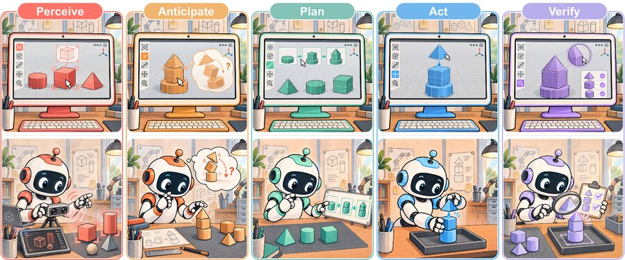
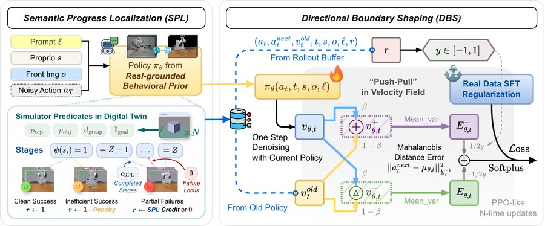
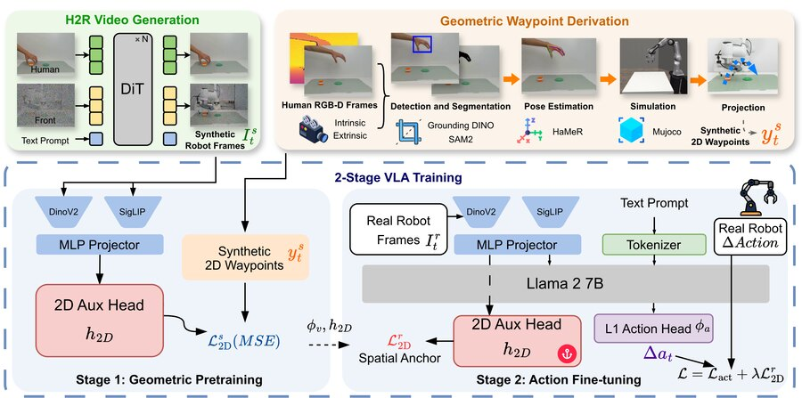
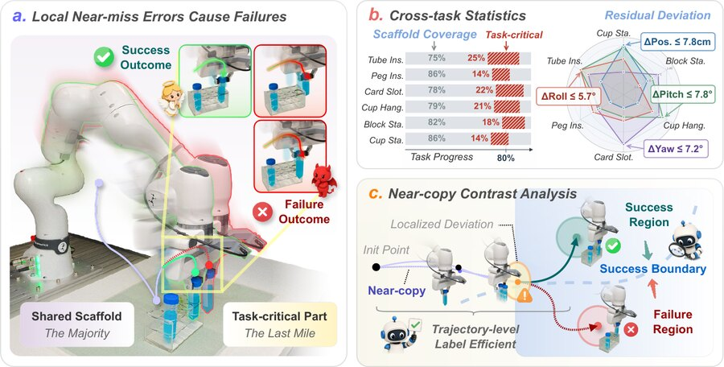
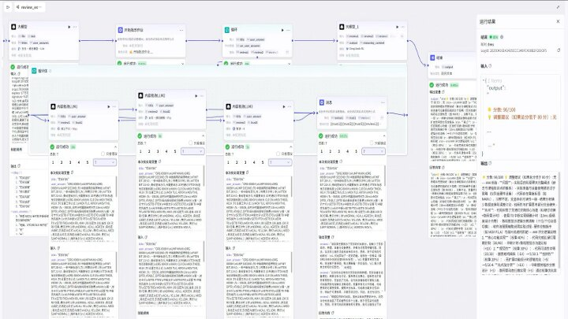
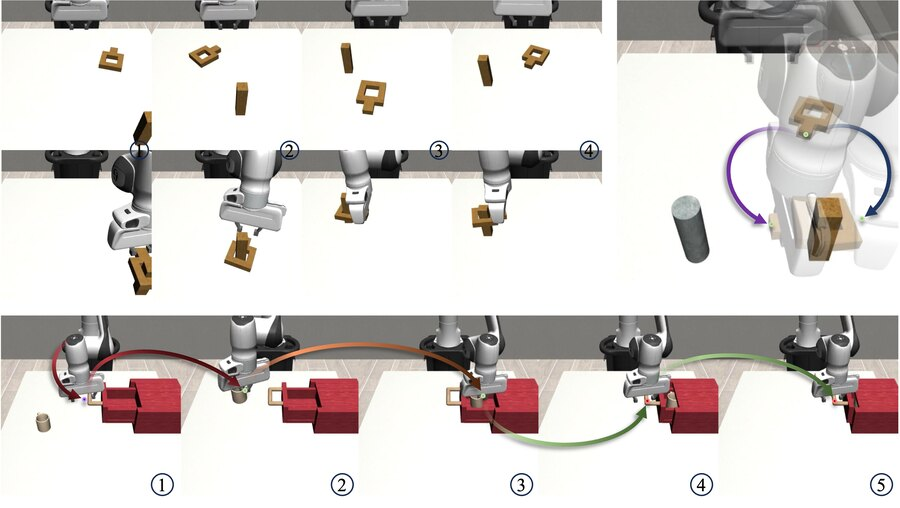
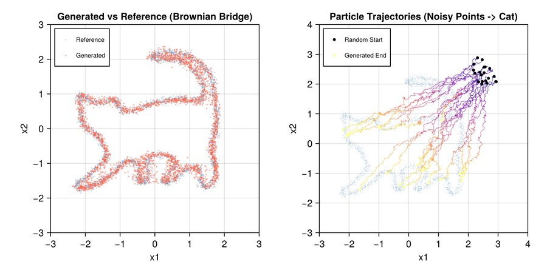

Show-Harness: Just a VLM Agent Can Play Robot
arXiv Preprint · 2026.09
Currently seeking Researcher / Algorithm Engineer roles in Embodied Foundation Models / Generative AI, and open to PhD Opportunities. See my CV for details.
I am an M.Sc. student in Electrical Engineering at the National University of Singapore, working on Robot Learning at Show Lab under the supervision of Prof. Mike Zheng Shou. My research interests include Vision-Language-Action Models, World Models, and Diffusion Models.
Previously, I received my B.Eng. in Automation from Zhejiang University, where my early research focused on robot control.
🦾 Released Show-Harness [Project Page, Code], and a [Survey] on robot-use agent.
🎉 Two papers (Where Success Breaks, Supervise What Survives) accepted @ CoRL 2026.
🐈⬛ Rejoined Mikomiko (Singapore), focusing on next-generation image generation model.
📸 Joined Show Lab @ NUS as an M.Sc. student.
🎉 Imitation Learning Based Manipulator Skill Training for Home Environment presented @ CAC 2024.
🎓 Graduated from Zhejiang University with a bachelor's degree in Automation.
arXiv Preprint · 2026.09

TEchRxiv Preprint · 2026.09

2026 Conference on Robot Learning (CoRL)· 2026.05

2026 Conference on Robot Learning (CoRL)· 2026.05

CCF-A Conference Under Review · 2026.05

Research and Exploration in Laboratory · 2026.02

2024 China Automation Congress, EI · 2024.11
Supported by the CNSF under Grant No. U21A20485

Course Blog for NUS EE5311 · 2026.03

China Campus · 2025.06
Want to find more about me? Go to 👉 🖼️ Gallery.
Feel free to email me to discuss the work above,
explore a possible collaboration, or simply say hello 🤗.